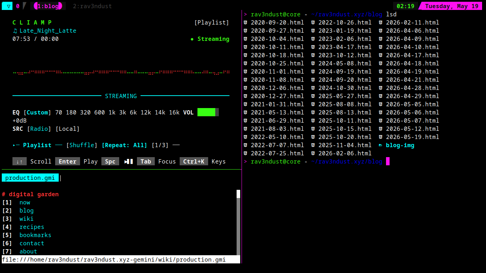
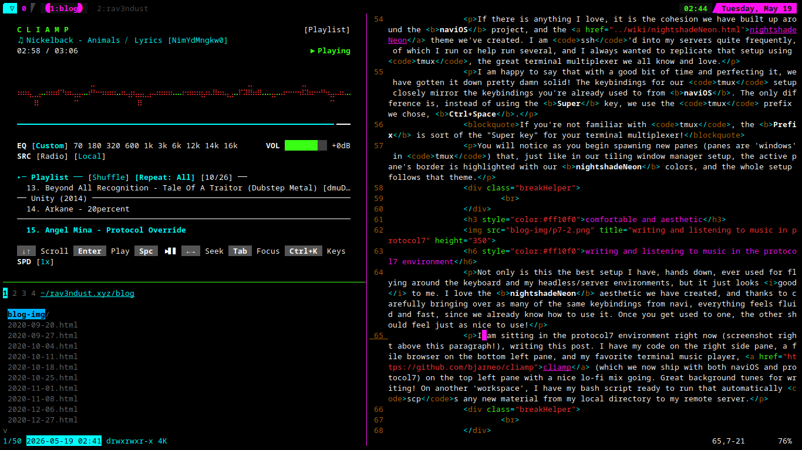

now | blog | wiki | recipes | bookmarks | contact | about | donate
* * * back home * * *
introducing you to the headless/server edition of naviOS
2026-05-19

If there is anything I love, it is the cohesion we have built up around the naviOS project, and the nightshadeNeon theme we've created. I am ssh'd into my servers quite frequently, of which I run or help run several, and I always wanted to replicate that setup using tmux, the great terminal multiplexer we all know and love.
I am happy to say that with a good bit of time and perfecting it, we have gotten it down pretty damn solid! The keybindings for our tmux setup closely mirror the keybindings you're already used to from naviOS. The only difference is, instead of using the Super key, we use the tmux prefix we chose, Ctrl+Space.
If you're not familiar with tmux, the Prefix is sort of the "Super key" for your terminal multiplexer!
You will notice as you begin spawning new panes (panes are 'windows' in tmux) that, just like in our tiling window manager setup, the active pane's border is highlighted with our nightshadeNeon colors, and the whole setup follows that theme.

Not only is this the best setup I have, hands down, ever used for flying around the keyboard and my headless/server environments, but it just looks good to me. I love the nightshadeNeon aesthetic we have created, and thanks to carefully bringing over as many of the same keybindings from navi, everything feels fluid and fast, since we already know how to use it. Once you get used to one, the other should feel just as nice to use!
I am sitting in the protocol7 environment right now (screenshot right above this paragraph!), writing this post. I have my code on the right side pane, a file browser on the bottom left pane, and my favorite terminal music player, cliamp (which we now ship with both naviOS and protocol7) on the top left pane with my playlist going, great background tunes for writing! On another 'workspace', I have my bash script ready to run that automatically scps any new material from my local directory to my remote server.
One thing I love about this setup is also the fact that I can take any ancient machine that is capable of displaying a TTY, dropping the protocol7 config on it, and you now have a minimal and snappy TTY-based desktop to use. I have one such machine here at home. It has no window manager, no x11, no wayland. You are dropped right into the protocol7 environment after logging in, and tmux is launched for you automatically. Perfect for just chilling out and really getting things done without any potential distractions.
This is my favorite way to write and to get programming done. Just spawn my tmux panes, get some tunes going in cliamp, and let my fingers dance across the keyboard, carrying all of our muscle memory from our navi environment right over into protocol7. It doesn't get any simpler, and it looks aesthetically pleasing and is an absolute joy to use.
if you haven't thought about really crafting up a TTY/headless/server environment and making it as cozy and enjoyable as possible to use before, consider trying out protocol7! If you have used navi or give it a try in the future, you will find yourself comfortable and familiar with how to use this setup already!
I am going to be doing another, more in-depth writeup about the protocol7 environment for the Wiki on this site, as well as for the forthcoming naviOS site. These pages will go more in depth about everything we use, how it is crafted, and master list of our keybindings.!
If you want to check it out, the source code is right here for you to poke around and give it a go for yourself!